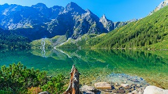
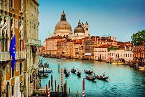

Olimp (gr. Όλυμπος, ΄Olimbos) to najwyższy masyw górski w Grecji, położony między północną a środkową częścią kraju, oddzielający historyczną Macedonię od Tesalii. Rozciąga się pomiędzy dolinami rzek Pinios i Aliakmon i zajmuje powierzchnię około 26 km. W 1938 roku góry te objęte zostały parkiem narodowym.

Morskie Oko
Morskie Oko to największe i czwarte pod względem głębokości jezioro w Tatrach, w południowej Polsce. Znajduje się ono w głębi Tatrzańskiego Parku Narodowego w Dolinie Rybiego Potoku, w paśmie górskim Tatr Wysokich u podnóża Masywu Mięguszowieckiego, w województwie małopolskim. Jezioro jest pochodzenia polodowcowego i wypełnia wydrążoną przez lodowiec misę skalną. Jego powierzchnia wynosi niecałe 35 hektarów, a głębokość sięga nawet 50,8 metra.

Wenecja
Wenecja jest miastem i gminą na północy Włoch nad Adriatykiem, stolica regionu Wenecja Euganejska. Miasto jest położone na ponad stu wysepkach, połączonych mostami i kanałami. Wenecja słynie ze swojej architektury, sztuki i historii, a także z tego, że tonie w tempie kilku milimetrów rocznie. Wenecja jest uważana za miasto miłości i jedno z najpiękniejszych miejsc na świecie
Wieża Eiffla
Wieża Eiffla została zbudowana jako tymczasowa konstrukcja na wystawę światową w Paryżu w 1889 roku, upamiętniającą stulecie Rewolucji Francuskiej. Wieża została wykonana głównie ze stali, składa się z 18 038 metalowych części połączonych 2,5 mln nitów i jest wsparta na 25-metrowych podstawach. Jej wysokość wynosi około 324 metry2. Wieża Eiffla jest najbardziej znany obiekt architektoniczny Paryża i jest uznawana za symbol tego miasta i niekiedy całej Francji.
Mount Everest
Mount Everest to najwyższy szczyt świata, leżący w Himalajach Wysokich (Centralnych), na granicy Nepalu i Tybetu. Inne nazwy góry to Czomolungma, Sagarmatha, Karczenczenga. Everest jest zbudowany z gnejsów, granitów, wapieni i łupków. Tworzy potężny masyw podcięty z trzech stron lodowcami, w tym najdłuższymi Khumbu i Rongbuk o długości około 17 km. Przez miejscową ludność uważany jest za siedzibę bogów.